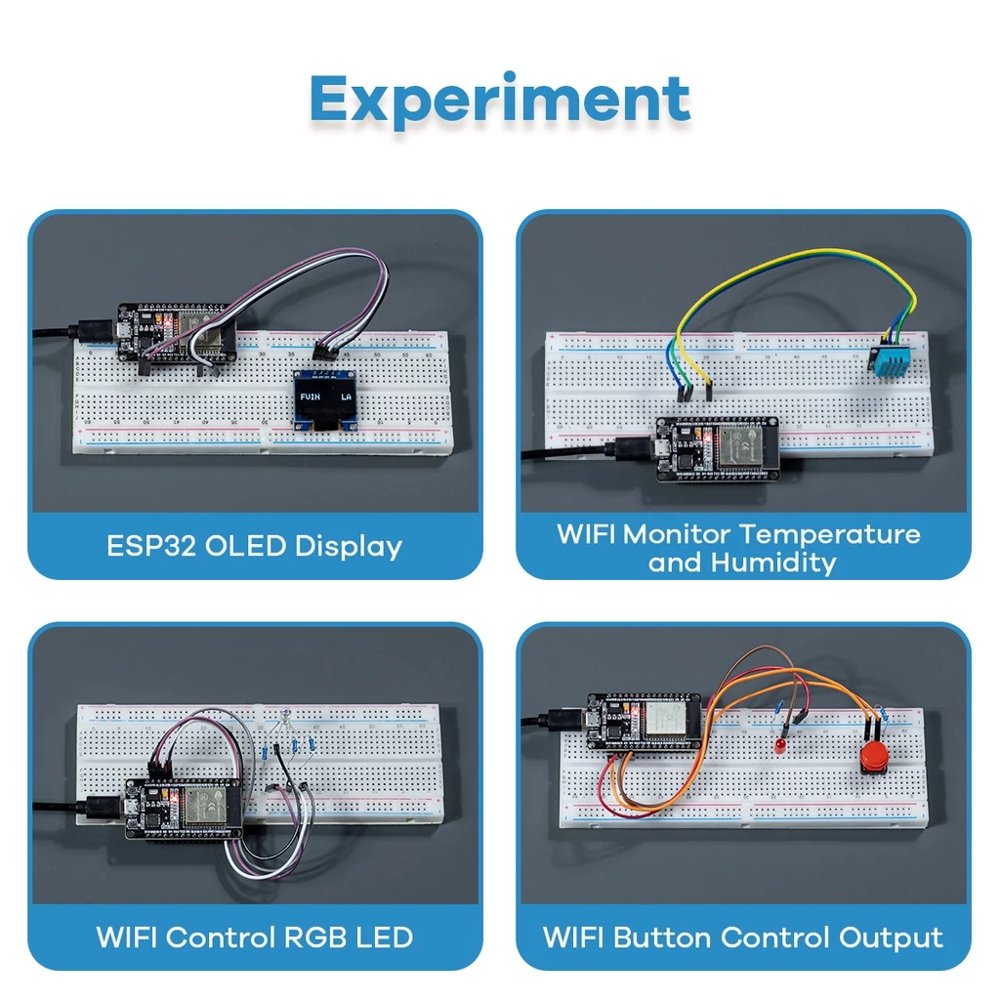
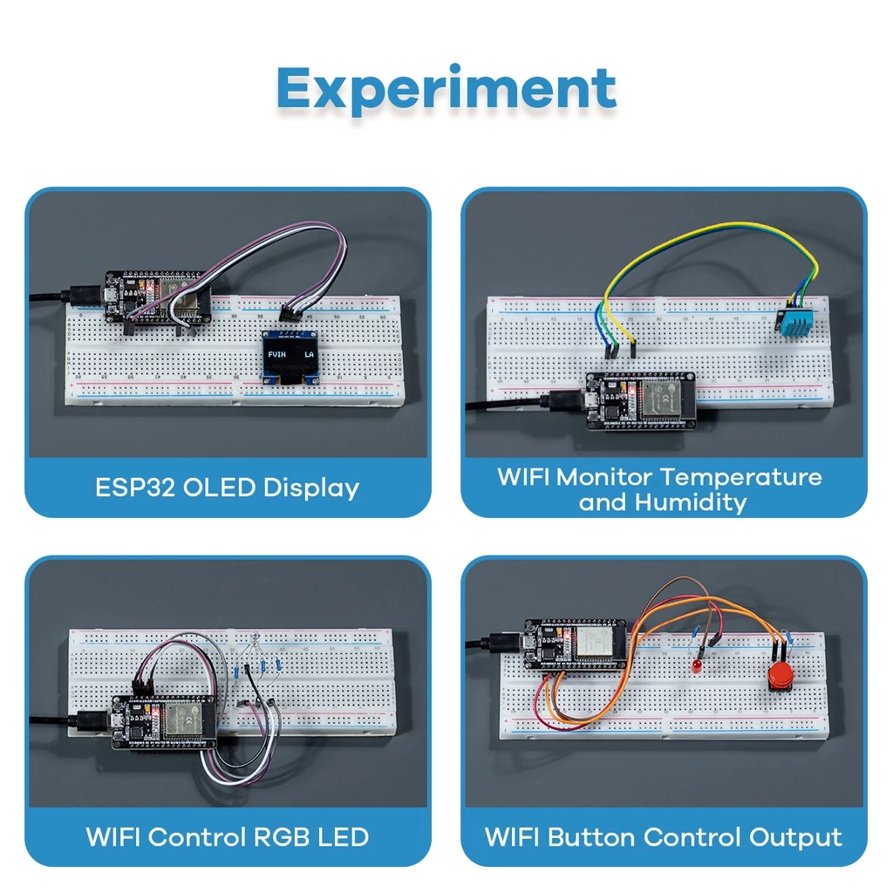

INTRODUCTION
This thesis will investigate the integration of Internet of Things (IoT) technology into first aid kits, analyzing the possible benefits, challenges, and implications of the way. The study will look at the design considerations, technology improvements, and practical applications of IoT-enabled first aid kits, with the goal of enhancing the effectiveness and accessibility of emergency medical services. Providing an overview of the history and current state of first aid kits, as well as the developing subject of IoT and its potential uses in healthcare. The thesis will concentrate on the incorporation of IoT technology into first aid kits, investigating the many sensors, communication protocols, and data processing capabilities that can be used to develop a new generation of smart first aid kits. Conducting t a thorough analysis to determine the potential benefits of IoT-enabled first aid kits, including real-time monitoring, immediate alert alerts, remote diagnosis, and automated emergency response coordination.
In addition, the constraints and limitations of adopting IoT technology in first aid, such as data privacy, security, and regulatory compliance will also be considered. This thesis's findings may have substantial implications for individuals, healthcare professionals, and emergency response groups. Understanding the possibilities and limitations of IoT-enabled first aid kits allows users to make more educated decisions about the adoption and deployment of these new solutions, thereby improving the overall efficacy and accessibility of emergency medical care.
Overview and Background
Throughout history that humanity has prioritized being healthy. Individuals from varied religious, regional, and cultural backgrounds have long sought treatments and preventative measures for the multiple health issues they have encountered. This study attempts to ensure that people fulfill their basic daily physical health needs by integrating the Internet of Things (IoT), robotics, and other technological advances under the development process. IoT was first coined by Kevin Ashton in the year 1999 (Alekya et al., 2021), and has since been used as a network infrastructure, powerful enough for different forms of communications and platforms to connect and network. IoT use in healthcare is especially crucial considering the growing need for easily available and preventative medical solutions to address the health problems people encounter throughout their lives. (Abdulmalek et al., 2022). Maslow's hierarchy of needs offers a helpful structure for understanding the role of health in the well-being of people. This thesis can help fill the gap between traditional medical needs and readily available technological healthcare alternatives, helping individuals better manage their health and well-being.
First aid kits have long been an essential instrument for providing quick care and treatment in emergency situations. These small and portable kits include a variety of materials and equipment for stabilizing and managing various medical problems until qualified medical help arrives. However, as technology advances, the traditional first aid box is bound to undergo an abrupt shift with the integration of the Internet of Things (IoT). The incorporation of IoT technology into first aid packs has the potential to transform how we approach emergency response and medical treatment. By combining smart sensors, wireless networking, and real-time data processing, the updated first aid kits can provide capability and responsiveness much beyond that of traditional counterparts.
Statement of the Problem
People face a wide range of health issues on a daily basis, from minor ailments like colds and coughs to more serious conditions such as injuries, stomachaches, and mental health struggles. These problems not only disrupt individuals' daily lives but also place significant pressure on global healthcare systems. Despite the frequent occurrence of these issues, effective and readily available solutions are often lacking. Moreover, challenges are compounded by unequal access to healthcare services, a lack of knowledge about preventative care, and disparities in healthcare provision. In urgent situations where assistance is needed, yet no one is nearby or able to call for help, how can individuals signal their need for immediate aid?
These are the questions we aim to answer and the problems we seek to address through our thesis. Although existing solutions within the technological healthcare industry address some needs, there remains a gap in proactively monitoring and managing basic health requirements in a user-friendly and cost-effective manner.
First aid kits have long played a crucial role in providing immediate care, yet they have historically been limited in their capabilities. Traditional first aid kits depend on manual inspection, inventory management, and user-initiated deployment, often resulting in delayed or ineffective responses—especially when time is critical. Furthermore, accessibility and availability of first aid kits are inconsistent across various settings, leading to suboptimal emergency preparedness and increased risks for individuals requiring immediate care.
Recent advancements in the Internet of Things (IoT) offer new possibilities for revolutionizing first aid kits. By integrating smart sensors, wireless connectivity, and real-time data processing, IoT-enabled first aid kits can overcome the limitations of traditional models and enhance the effectiveness and accessibility of emergency medical care. However, integrating IoT technology into first aid kits is still a relatively new and untested concept, with limited research and practical application. Challenges such as data privacy, security, and regulatory compliance also need further exploration.
This thesis aims to conduct a comprehensive investigation into the integration of IoT technology into first aid kits. The research will identify potential benefits, limitations, and challenges of this approach, providing a better understanding of how emerging technologies can enhance emergency medical response. By examining design considerations, technological advancements, and practical applications of IoT-enabled first aid kits, this thesis will contribute to innovative solutions that improve the safety and well-being of individuals and communities. The findings will have significant implications for healthcare providers, emergency response organizations, and policymakers, enabling informed decisions about adopting and implementing these transformative technologies.
Objectives of the Study
This thesis explores innovative solutions to enhance the availability and management of first aid kits in local facilities through the integration of IoT technology. By examining the current barriers, developing a prototype, conducting a test phase, and ultimately creating a framework for implementation, this research aims to improve healthcare delivery and emergency preparedness. The following objectives will guide this study:
Examine the current barriers and challenges in the availability and management of first aid kits in local facilities.
Create a prototype of an IoT-integrated first aid kit and assess its effectiveness in improving healthcare delivery in local facilities.
Conduct a test phase to evaluate the suggested solution's real-world application and scalability with feedback from healthcare practitioners, facility administrators, and community members.
Develop a framework for implementing IoT-integrated first aid kits in local healthcare systems, addressing cost, infrastructural, and user acceptance problems.
Significance of the Study
The significance of this study arises from its potential to transform the way emergency medical treatment is delivered and accessed. By incorporating IoT technology into first aid kits, the study hopes to improve first responders' effectiveness and response, ultimately improving patient outcomes and saving lives. The outcomes of this thesis will provide insight into the design, implementation, and practical uses of IoT-enabled first aid kits, addressing crucial issues such as data privacy, security, and regulatory compliance. The findings of this study will guide the development of next-generation first aid solutions, allowing individuals, healthcare providers, and emergency response groups to make more informed decisions about the adoption and integration of these novel technologies. Expanding the understanding of potential digital technologies in the field of healthcare and open the door to more effective, convenient, and individualized emergency medical services.
Scope and Limitations
The project aims to design and develop an IoT-enabled Virtual Medical Assistance and Response (VMAR) system that provides on-demand medical assistance, first aid, and basic healthcare services to individuals in local communities. To achieve this, the project will focus on optimizing the contents and management of first aid kits, ensuring they are well-stocked and can be efficiently utilized by the VMAR system. Additionally, it will integrate IoT technologies, including sensors, medical devices, and information systems, to create a comprehensive and efficient healthcare solution. Finally, the effectiveness of the VMAR system will be evaluated in terms of enhancing access to basic healthcare services, reducing the burden on larger healthcare institutions, and improving the overall quality of care.
The prototype will not be designed to diagnose or treat serious medical conditions, focusing instead on providing basic healthcare assistance. To ensure the security and privacy of user data collected by the system, strict measures for data protection will be necessary. Long-term studies will be required post-development to assess whether the VMAR system contributes to improved long-term health outcomes and to determine the regular usage rates among individuals. Additionally, financial limitations and professional expertise will be essential for effective technological integration and design. The deployment of the VMAR system may also face various legal and regulatory restrictions, which could pose challenges for compliance and execution.
 
